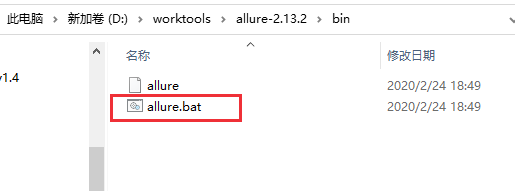
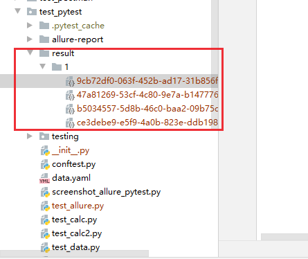
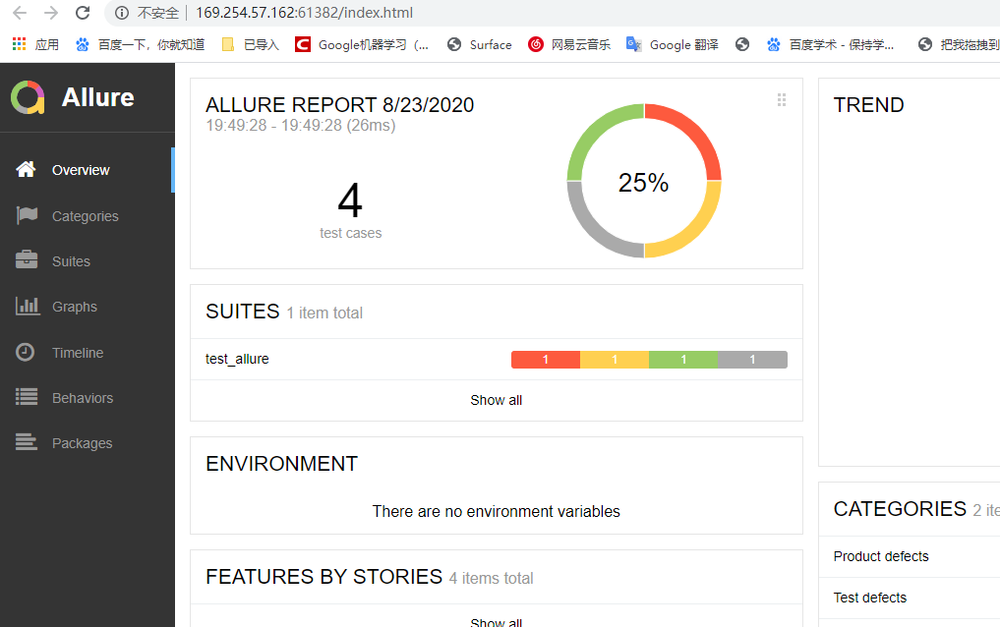
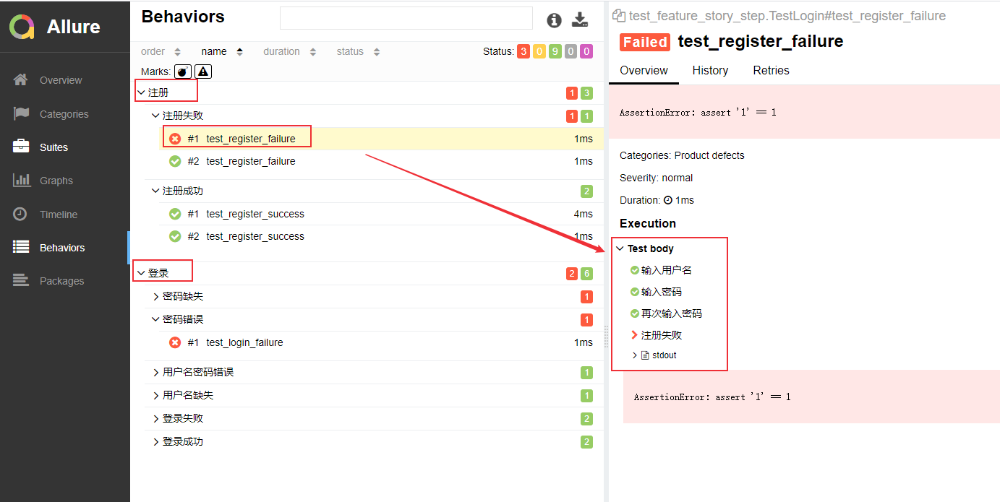
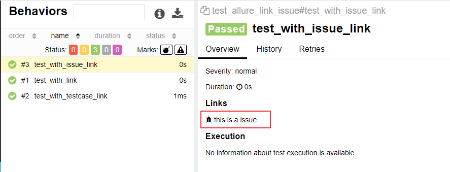
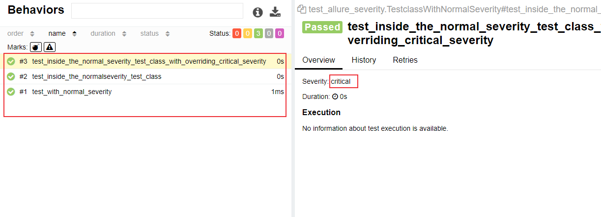

Allure 是一款轻量级、支持多语言的开源自动化测试报告生成框架，由Java语言开发，可以集成到 Jenkins。 pytest 测试框架支持Allure 报告生成。
pytest也可以生成junit格式的xml报告和HTML报告，命令如下：1
2pytest test_demo.py --junitxml=report.xml
pytest test_demo.py --html=report.html #需要安装插件：pip install pytest-html
Allure 报告更加灵活美观，本文介绍如何使用pytest 生成 allure测试报告
环境安装
安装allure
- allure包下载：https://github.com/allure-framework/allure2/releases
- 解压 -> 进入bin目录 -> 运行allure.bat,
- 把bin目录加入PATH环境变量

allure官网 : https://qameta.io/allure-report/
allure文档 : https://docs.qameta.io/allure/#
安装 allure-pytest插件
1 | pip install allure-pytest |
生成Allure报告
运行
1 | pytest [测试文件] -s -q --alluredir=./result #--alluredir用于指定存储测试结果的路径) |
查看测试报告
方式一：直接打开默认浏览器展示报告
allure serve ./result/
方式二：从结果生成报告
生成报告
allure generate ./result/ -o ./report/ --clean(覆盖路径加—clean)打开报告
allure open -h 127.0.0.1 -p 8883 ./report/
实例代码：https://docs.qameta.io/allure/#_pytest
test_allure.py：
1 | import pytest |
方法1
执行测试用例:
1 | pytest test_allure.py --alluredir=./result/1 |

打开报告:
1 | > allure serve ./result/1 |

方法2
1 | allure generate ./result/1 -o ./report/1/ --clean |
浏览器访问地址 http://127.0.0.1:8883/ ，会显示跟上图一样的报告。
通过nginx 服务查看报告
由于查看报告时都需要执行上面的命令，将报告发给其他人查看就不是很方便，我们可以将报告放到 tomcat 或者 nginx 服务器上，然后通过IP地址来访问。另外，如果你使用的是Jenkins来进行用例执行，可以安装一个allure插件，测试执行完成后，可以在Jenkins上查看allure报告，具体实现可以参考持续集成：jenkins + pytest + selenium + Git + Allure自动化测试。
下面介绍使用nginx 服务来查看报告。
在服务器上nginx服务
1、docker安装nginx（docker安装方法可参考容器技术介绍：Docker简介及安装）1
docker pull nginx
2、启动nginx服务
挂载目录：将你的报告存放目录映射到容器目录/usr/share/nginx/html1
docker run -p 80:80 -d --name=nginx -v /var/pytest/report:/usr/share/nginx/html nginx:latest
allure报告可以通过allure generate ./result -o ./report命令生成，将报告放到/var/pytest/report目录下。
3、访问服务器IP地址
我的地址是：http://192.168.20.9:80/
这样就可以查看allure报告了，其它人也可以通过访问这个地址（注意要在同一局域网下或者可以通信）来查看报告。
allure特性—feature, storry, step
可以在报告中添加用例描述信息，比如测试功能，子功能或场景，测试步骤以及测试附加信息：
- @allure.feature(‘功能名称’)：相当于 testsuite
- @allure.story(’子功能名称‘)：对应这个功能或者模块下的不同场景，相当于 testcase
- @allure.step(‘步骤’)：测试过程中的每个步骤，放在具体逻辑方法中
- allure.step(‘步骤’) 只能以装饰器的形式放在类或者方法上面
- with allure.step：可以放在测试用例方法里面
- @allure.attach(‘具体文本信息’)
- 附加信息：数据，文本，图片，视频，网页
测试用例 test_feature_story_step.py：
1 | import pytest |
用例执行、生成报告
1 | pytest test_feature_story.py --alluredir=./result/2 |
报告：

allure特性—link, issue, testcase
可以在测试报告中添加链接、bug地址、测试用例地址。
关联bug需要在用例执行时添加参数：
- —allure-link-pattern=issue:[bug地址]{}
- 例如：—allure-link-pattern=issue:http://www.bugfree.com/issue/{}
test_allure_link_issue.py：
1 | import allure |
用例执行:
1 | pytest test_allure_link_issue.py --allure-link-pattern=issue:http://www.bugfree.com/issue/{} --alluredir=./result/3 |
报告：

点击 this is a issue，页面会跳转到bug页面：http://www.bugfree.com/issue/140
allure特性—severity
有时候在上线前，由于时间关系，我们只需要把重要模块测试一遍，在这样的场景下我们怎么实现呢？主要有三种方法：
- 可以使用pytest.mark来标记用例，Pytest测试框架（一）：pytest安装及用例执行 介绍了这种方法。
1
2
3# 添加标签
pytest -m "webtest and not sec" - 通过 allure.feature, allure.story来实现
1
2
3pytest test_feature_story_step.py --allure-features "登录" //只运行登录模块
pytest test_feature_story_step.py --allure-stories "登录成功" //只运行登录成功子模块
```sss1
2
3
4
5
6
7
8
9
10
11
12
13
14
15
16
17
18
19
20
21
22
23
24
25
26
27
28
29
30
31
32
33
34
35
36
37
38
39
40
3. 通过 allure.severity按重要性级别来标记，有5种级别：
- Blocker级别：阻塞
- Critical级别：严重
- Normal级别：正常
- Minor级别：不太重要
- Trivial级别：不重要
test_allure_severity.py：
```python
import allure
import pytest
def test_with_no_severity_label():
pass
@allure.severity(allure.severity_level.TRIVIAL)
def test_with_trivial_severity():
pass
@allure.severity(allure.severity_level.NORMAL)
def test_with_normal_severity():
pass
@allure.severity(allure.severity_level.NORMAL)
class TestclassWithNormalSeverity(object):
def test_inside_the_normalseverity_test_class(self):
pass
@allure.severity(allure.severity_level.CRITICAL)
def test_inside_the_normal_severity_test_class_with_overriding_critical_severity(self):
pass
用例执行:
1 | pytest test_allure_severity.py --alluredir=./result/4 --allure-severities normal,critical |
结果：

allure.attach()
可以在报告中附加文本、图片以及html网页，用来补充测试步骤或测试结果，比如错误截图或者关键步骤的截图。
test_allure_attach.py：
1 | import allure |
用例执行:
1 | pytest test_allure_attach.py --alluredir=./result/5 |
结果：

pytest+selenium+allure报告
测试步骤：
- 打开百度
- 搜索关键词
- 搜索结果截图，保存到报告中
- 退出浏览器
test_allure_baidu.py：
1 | import allure |
用例执行:
1 | pytest test_allure_baidu.py --alluredir=./result/6 |
结果：

本文标题:Pytest测试框架（五）：pytest + allure生成测试报告
文章作者:hiyo
文章链接:https://hiyongz.github.io/posts/pytest-allure-report/
许可协议:本博客文章除特别声明外，均采用CC BY-NC-ND 4.0 许可协议。转载请保留原文链接及作者。